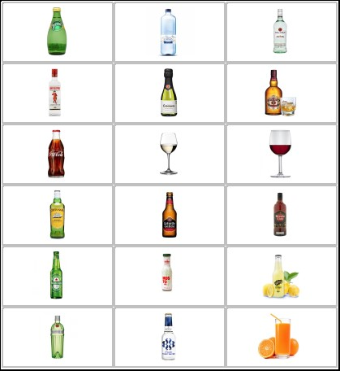
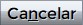

Pedir Consumición
Al acceder a este menú, el usuario encontrará la siguiente pantalla:
El panel para la solicitud de consumiciones desde el puesto de juego dispone de las siguientes áreas:
- Área de texto inicialmente vacía en la que se muestra el pedido y el precio de cada bebida añadida.
- Campos que muestran el precio total del pedido, el saldo del cliente y el hipotético saldo restante tras la compra.
- Panel de botones con los iconos de todas las bebidas disponibles en la carta para su incorporación al pedido.
- Opciones para confirmar el pedido o cancelar el mismo, además de un posible aviso si el cliente no puede realizar el pedido.
¿Cómo añadir bebidas al pedido?
En la mitad derecha de la pantalla, el usuario visualizará una parrilla de botones con imágen como la siguiente:

Cada una de las imágenes corresponde a un botón. Pulsando cualquier botón de forma correcta,
se añadirá al pedido 1 unidad de la bebida correspondiente, lo cual podrá ser visualizado en el área de texto:
El comportamiento de los botones es el mismo en todos los casos.
Además, se actualizarán los campos Precio Total y Saldo tras pedir.
¿Cómo eliminar bebidas del pedido?
Tal y como se mostró en la imagen anterior, en el área de texto del pedido
es posible visualizar las bebidas actualmente añadidas al pedido, si las hay.
De esta manera, bastará con hacer click (o acceder mediante el teclado y desplazarse
con las teclas de las flechas hasta alcanzar la bebida deseada) para seleccionar
la bebida que el usuario desea borrar.
A continuación, bastará con pulsar la tecla "Supr", y la bebida seleccionada
será eliminada del pedido.
Además, se actualizarán los campos Precio Total y Saldo tras pedir.
¿Cómo confirmar el pedido?
En la zona inferior de la mitad izquierda de la pantalla, el usuario dispondrá
de los botones y .
Inicialmente, el botón se encontrará inhabilitado,
por lo que es necesario que el usuario añada alguna bebida al pedido para poder confirmarlo.
Si el cliente finalmente decide cancelar su pedido, puede hacerlo libremente
mediante el botón y el pedido será desechado para la próxima vez.